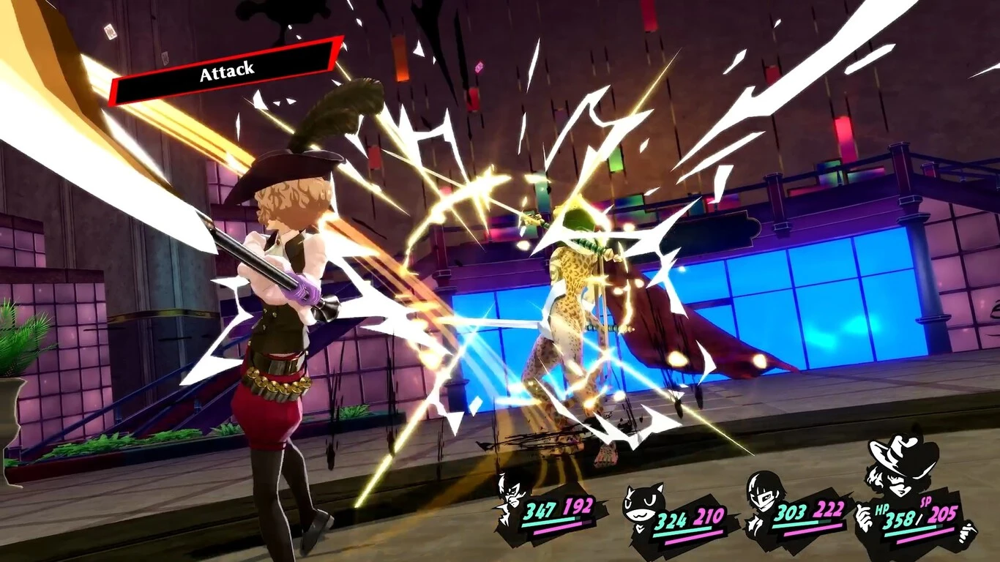

El director de persona 5 tiene una idea para que los combates por turnos no pasen de moda y no se vean anticuados.
Era uno de los sistemas clave en el mundo de los videojuegos, pero la acción le ha adelantado por la derecha. Uno de sus emblemas tiene una solución.
Hay futuro para los combates por turnos
"En la historia de los RPG hasta ahora, ha habido muchos ejemplos de juegos que han utilizado batallas por turnos que, con el tiempo, fueron sustituidas por escenas de acción para dar al jugador una mayor sensación de inmersión. Sin embargo, personalmente creo que las batallas por turnos no se convertirán en un sistema arcaico si se pueden implementar de forma que encajen como "parte de una cinemática", explica Hashino.
Su idea es que el combate por turnos evolucione hasta el punto de integrar su uso dentro de las escenas del juego. Eso sí, no esquiva los problemas del sistema: "Somos conscientes de que el sistema "por turnos" detiene el ritmo de las batallas en su conjunto, así que fuimos conscientes de la jugabilidad de Persona 5 para no estropear esa sensación de inmersión en la medida de lo posible. Por ejemplo, los jugadores pueden atacar o invocar a un personaje con solo pulsar un botón. Dedicamos mucho tiempo a pensar en ello."
Una parte clave de porqué Persona 5 es tan icónico, posiblemente sean sus transiciones tan trabajadas. Esa forma en la que pasamos de las batallas al mapa y viceversa es resultona, pero es mucho más que eso: "Al incorporar estos cortes y los momentos en los que el flujo del tiempo cambia en un RPG, intentamos que los efectos visuales sean convincentes en términos de una batalla por turnos. Luego, añadimos el diálogo entre los personajes durante la batalla y la historia antes y después de que empiece la batalla."